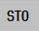
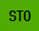

The meanings and states of the individual bits in the control word and status word are shown in the "PROFIsafe telegram" window.
The following states are possible:
Symbol | Meaning |
|---|---|
|  | Bit has the value 0 |
|  | Bit has the value 1 |
You can also toggle between the following views in the "PROFIsafe telegram type 903" window:
Status word
Status word cam
The view of all user data of the control word and status word is displayed using the "Details" softkey.
| Note |
Changing the viewIn this diagnostics view, you can display the signal information of various drives. You can select the required drive using softkeys "Drive-", "Drive +" or "Select drive". |